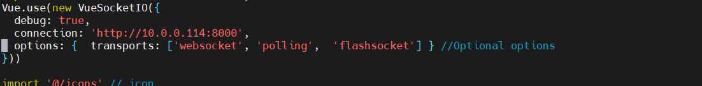
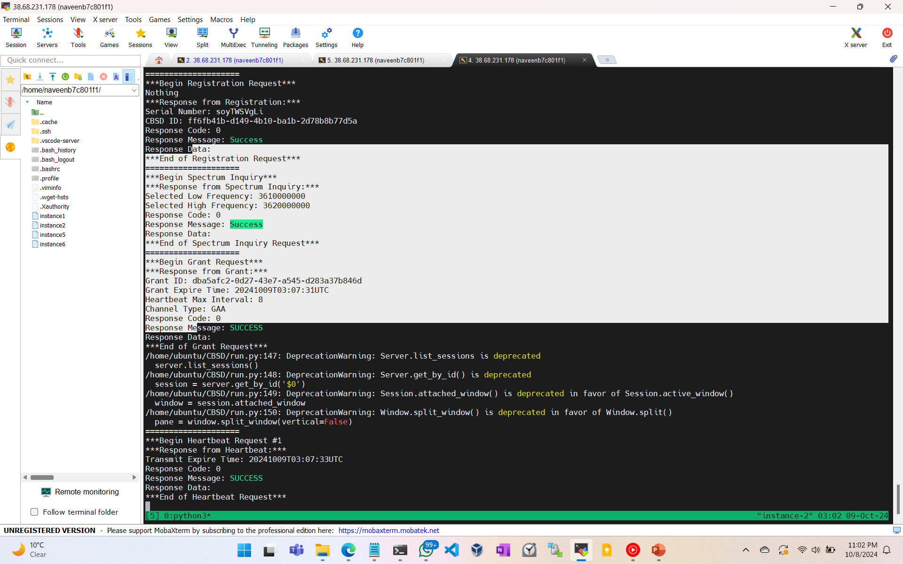

CBSD Client for OpenSAS
To set up and run the CBSD client for OpenSAS:
Ensure Certificates Are Generated:
Generate certificates in OpenSAS using this machine’s IP (accessible from other VMs). Place the certificates in the Certs folder of the CBSD client.


Copy the Appropriate `gnb` YAML File:
Copy your gnb YAML file from your
srsRAN/configsfolder to the CBSD client directory.
Modify `run.py`:
Update the script to include your specific srsRAN config file.
# In run.py, modify to add your gNB YAML file name gnb_config_file = 'your_gnb_config.yml'

Copy the Appropriate `gnb` YAML File:
Copy your gNB YAML file from your srsRAN/configs folder to the CBSD client directory.

Modify `CBSD.py`:
Include the OpenSAS IP and proper CBSD client certificate path.
 # In CBSD.py, modify to include OpenSAS IP and certificate paths SAS_ENDPOINT = 'https://<OpenSAS_IP>:1443/sas-api/' CERT_PATH = 'Certs/client-<OpenSAS_IP>-0.cert' KEY_PATH = 'Certs/client-<OpenSAS_IP>-0.key' CA_CERT_PATH = 'Certs/ca.cert'

Run the CBSD Client:
Start the CBSD client using the modified run.py script.
python3 run.py --lat <latitude> --lon <longitude> --fcc <FCC-ID> --low <low_freq> --high <high_freq> --eirp <eirp_value> --react <react_value>
Example:
python3 run.py --lat 38.88086127246137 --lon -77.11558699967016 --fcc GAA-Arlington --low 3610e6 --high 3620e6 --eirp 20 --react 0
{kind=link}
{kind=link}